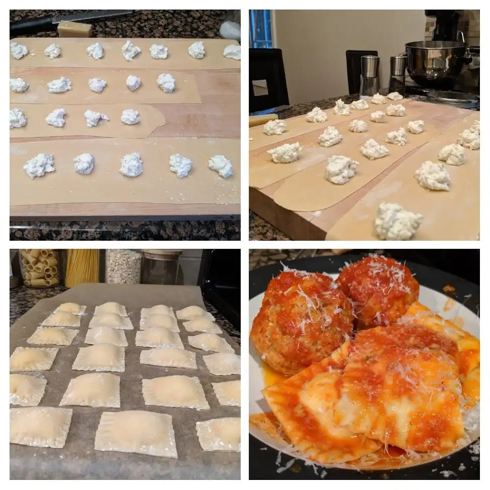
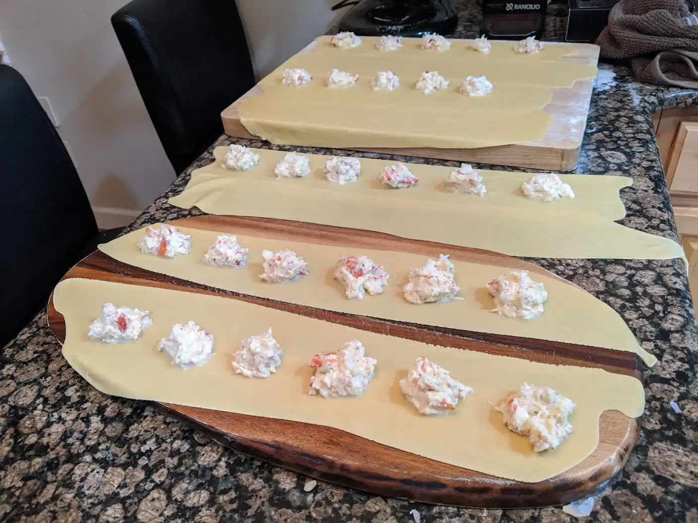
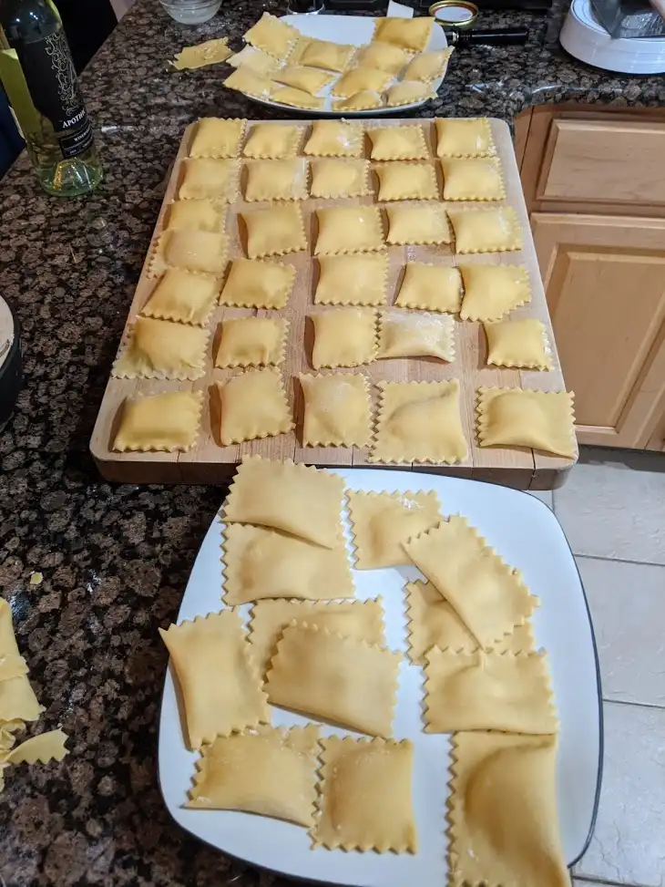
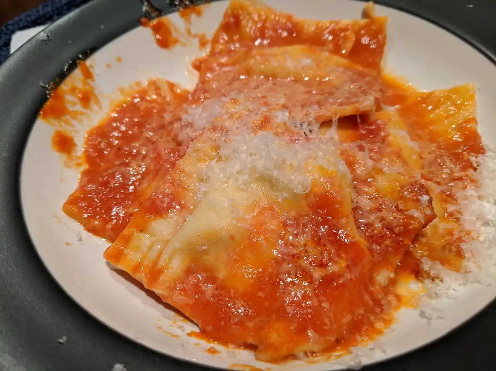

Ravioli

- ⏲️ Prep time: 30 min
- 🍳Cook time: 2 min
- 🍽️ Servings: 4
Ingredients
Dough
- 4 eggs
- 400 g 00 flour
- Drizzle of olive oil
Cheese Filling
- 1 lemon
- 50 g grated Pecorino Romano cheese
- 250 g ricotta
- 1 egg
Seafood Fillings
- Chopped leftover lobster legs, lobster tail, or minced crab (optional)
Directions
- The basic rule of thumb I use for pasta is 100g, 1 egg per person
- For this recipe you can go two ways, the old school “well” method or a kitchen aid mixer (skip to step 7)
- For the well method, pile the flour onto the counter and with your hand carve a hole or a well in the center
- Crack the eggs into the center of the well, and drizzle a bit of olive oil into the center
- With a fork, begin slowly breaking up, mixing, and incorporating the egg into the flour until there is no longer any loose egg that can escape the outer well border
- At this point use your hands to bring the sandy mixture together and knead the dough for about 5-10 minutes or until the dough is smooth
- For the stand mixer method just throw all the ingredients into the mixer with a dough hook and set it to level 4 for about 3-5 minutes and it will be done
- You might need to scrape the sides down and maybe hand knead the dough a bit longer after it’s done to make it into a nice smooth ball
- Cover the dough with plastic wrap and let it rest in the fridge a bit so it’s easier to roll out (15-30 mins)
- While the dough is resting, make the filling by first mixing the ricotta and egg into a bowl
- Zest and juice a lemon peel into the bowl
- Optionally add seafood ingredients at this point
- Grate the Pecorino into the bowl, add salt and pepper to taste, and mix to distribute the ingredients evenly
- Take out the dough and cut it into 4 pieces, keeping the ones not currently being worked on covered so they don’t dry out
- Roll the dough out with a pasta machine down to the point where you can just barely see your hand through it (setting 2-3 out of 7) or roll it out with a rolling pin into a long sheet, maybe like 16 x 8 inches or so
- At this point you can either cut the sheet in half and make two sheets, a top and bottom, or one sheet, where you will fold the dough over and use the folded seam as one side of the ravioli 
- Using a teaspoon, evenly space out the ricotta filling onto the sheets, leaving a few inches on each side for the seams
- As stated in step 16, either take the 2nd sheet and place it over top or fold over the dough and press down firmly, forcing out any air and making sure the two pieces of dough stick
- You may need to brush some water onto the dough if it is too heavily floured and not sticking
- Using a fancy pasta cutter, a knife, or even a pizza cutter, cut evenly between the seams of the raviolis to separate them
- If you used a pasta cutter, you are now done, store the raviolis on a floured wax paper sheet or freeze them for later 
- If you don’t have a pasta cutter, use a fork to press down the dough around the edges of the cut raviolis to ensure they are firmly closed and no leaks or air bubbles are visible, or else they will explode when cooked
- To cook, throw them in salted boiling water and they will let you know when they’re done when they float to the top (1-2 minutes)
- Serve the seafood version with a simple fresh red sauce and basil, or spice it up a bit and go with a base of red sauce with some added heavy cream, and a pinch of red pepper flakes to make a pink sauce for the seafood version 
Contribution
- mfed3 - xmr:
48eEMdYtCQaV5wY7wvmxK6jCxKkia9dgpNTMNT1do7RLWXCwWDgSKjN3kiZ6yHbAuAXWgDGN6imnGT9NPeHWD7zX9hSyHu2